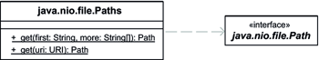

15.3 Dateisysteme unter NIO.2
Die bisher vorgestellten Konzepte gibt es im Wesentlichen schon seit den Urzeiten von Java, also seit Java 1.0. In den letzten Jahren ist rund um die File-Klasse wenig passiert. Doch Entwickler quälten sich immer wieder mit ganz zentralen Fragen, die die bisherigen Implementierungen nicht wirklich lösten:
- Wie lässt sich eine Datei einfach und schnell kopieren?
- Wie lässt sich eine Datei verschieben, wobei die Semantik auf unterschiedlichen Plattformen immer gleich ist.
- Wie lässt sich auf eine Änderung im Dateisystem reagieren, sodass ein Callback uns informiert, dass sich eine Datei verändert hat?
- Wie lässt sich einfach ein Verzeichnis rekursiv ablaufen?
- Wie lässt sich eine symbolische Verknüpfung anlegen und verfolgen?
- Wie lässt sich realisieren, dass die File-Operationen abstrahiert werden und nicht nur auf dem lokalen Dateisystem basieren? Wünschenswert ist eine Abstraktion, sodass die gleiche API auch ein virtuelles Dateisystem im Hauptspeicher, entfernte Dateisysteme wie FTP oder ein Repository anspricht.
Diese Probleme wurden für Java 7 angegangen und in der JSR-203, »More New I/O APIs for the JavaTM Platform ("NIO.2")«, spezifiziert. Die JSR began schon 2003, und so waren die Erwartungen der Java-Community groß, dass sie nicht so lange warten müssten. Aber erst in Java 7 kam es zum großen Wurf. Das macht die »alte« File-Klasse eigentlich überflüssig, aber vermutlich scheut sich Oracle davor, ein @Deprecated an die Klasse zu setzen, denn sonst würden plötzlich riesige Mengen Quellcode in vielen Programmen markiert.
15.3.1 FileSystem und Path
Im Zentrum der in Java 7 und NIO.2 eingeführten neuen Klassen stehen FileSystem und Path. Die neuen Typen befinden sich im Gegensatz zu File, das im java.io-Paket liegt, im Paket java.nio.file. Es gibt zwar einige Überlappungen, doch NIO.2 ist mehr oder weniger komplett vom »alten« Modell getrennt:
- FileSystem beschreibt ein Datensystem und ist eine abstrakte Klasse. Es wird von konkreten Dateisystemen, wie dem lokalen Dateisystem oder einem Zip-Archiv, realisiert. Um an das aktuelle Dateisystem zu kommen, deklariert die Klasse FileSystems eine statische Methode: FileSystems.getDefault().
- Path repräsentiert einen Pfad zu einer Datei oder einem Verzeichnis, wobei die Pfad-angaben relativ oder absolut sein können. Die Methoden erinnern ein wenig an File, doch der große Unterschied ist, dass File selbst die Datei oder das Verzeichnis repräsentiert und Anfragemethoden wie isDirectory() oder lastModified() deklariert, während Path nur den Pfad repräsentiert und nur pfad-bezogene Methoden anbietet. Modifikationsmethoden gehören nicht dazu; dazu dienen extra Typen wie BasicFileAttributes für Attribute.
Ein Path-Objekt aufbauen
Ein Path-Objekt lässt sich nicht wie File über einen Konstruktor aufbauen, da die Klasse abstrakt ist. File und Path haben aber dennoch einiges gemeinsam, etwa dass sie immutable sind. Das FileSystem-Objekt bietet die entsprechende Methode getPath(), und ein FileSystem wird über eine Fabrikmethode von FileSystems erfragt.
| Beispiel |
|
Baue ein Path-Objekt auf: FileSystem fs = FileSystems.getDefault(); |
Da der Ausdruck FileSystems.getDefault().getPath() etwas unhandlich ist, existiert die Methode get() in der Utility-Klasse Paths. Auch aus einem File-Objekt lässt sich mit toPath() ein Path ableiten, was bedeutet, dass Oracle für Java 7 noch einmal die File-Klasse angefasst und auf die neuen NIO.2-Klassen angepasst hat. Wir werden die Vereinfachung mit Paths.get() im Folgenden nutzen.
final class java.nio.file.Paths |
- static Path get(String first, String... more)
Erzeuge einen Pfad aus Segmenten. Wenn etwa »\« der Separator ist, dann ist Paths.get("a", "b", "c") gleich Paths.get("a\\b\\c"). - static Path get(URI uri)
Erzeugt einen Pfad aus einer URI.
Jedes Path-Objekt hat auch eine Methode getFileSystem(), um wieder an das FileSystem zu kommen.
Abbildung 15.3: Abhängigkeiten der Klassen Paths und Path
15.3.2 Die Utility-Klasse Files
Da die Klasse Path nur Pfade, aber keine Dateiinformationen wie die Länge oder Änderungszeit repräsentiert und Path auch keine Möglichkeit bietet, Dateien anzulegen und zu löschen, übernimmt die Klasse Files diese Aufgaben.
Einfaches Einlesen und Schreiben von Dateien
Nach 15 Jahren des Wartens gibt es nun auch Methoden, die den Dateiinhalt einlesen oder Strings bzw. ein Byte-Feld schreiben.
Listing 15.2: com/tutego/insel/nio2/ListAllLines.java
package com.tutego.insel.nio2;
import java.io.IOException;
import java.net.*;
import java.nio.charset.Charset;
import java.nio.file.*;
public class ListAllLines
{
public static void main( String[] args ) throws IOException, URISyntaxException
{
URI uri = ListAllLines.class.getResource( "/lyrics.txt" ).toURI();
Path path = Paths.get( uri );
System.out.printf( "Datei '%s' mit Länge %d Byte(s) hat folgendes Zeilen:%n",
path.getFileName(), Files.size( path ) );
int lineCnt = 1;
for ( String line : Files.readAllLines( path, StandardCharsets.UTF_8 ) )
System.out.println( lineCnt++ + ": " + line );
}
}
Abbildung 15.4: UML-Diagramm von Files
| Hinweis |
|
Auch wenn es naheliegt, die Files-Methode zum Einlesen mit einem Path-Objekt zu füttern, das ein HTTP-URI repräsentiert, funktioniert dies nicht. So liefert schon die erste Zeile des Programms eine Ausnahme des Typs »java.nio.file.FileSystemNotFoundException: Provider "http" not installed«. Path path = Paths.get( new URI( "http://tutego.de/aufgaben/bond.txt" ) ); |
final class java.nio.file.Files |
- static long size(Path path) throws IOException
- static byte[] readAllBytes(Path path) throws IOException
- static List<String> readAllLines(Path path, Charset cs) throws IOException
- static Path write(Path path, byte[] bytes, OpenOption... options) throws IOException
- static Path write(Path path, Iterable<? extends CharSequence> lines, Charset cs,
OpenOption... options) throws IOException
Ihr Kommentar
Wie hat Ihnen das <openbook> gefallen? Wir freuen uns immer über Ihre freundlichen und kritischen Rückmeldungen.
 Jetzt bestellen
Jetzt bestellen


{kind=link}
{kind=link}